Simple examples
The obligatory "Hello World"
Here's the "Hello world":
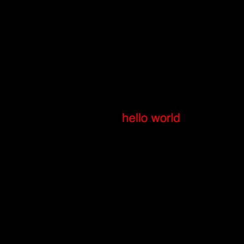
using LuxorDrawing(1000, 1000, "hello-world.png")origin()background("black")sethue("red")fontsize(50)text("hello world")finish()preview()Drawing(1000, 1000, "hello-world.png") defines the width, height, location, and format of the finished image. origin moves the 0/0 point to the centre of the drawing surface (by default it's at the top left corner). Thanks to Colors.jl we can specify colors by name as well as by numeric value: background("black") defines the color of the background of the drawing. text("helloworld") draws the text. It's placed at the current 0/0 point and left-justified if you don't specify otherwise. finish completes the drawing and saves the PNG image in the file. preview tries to display the saved file, perhaps using another application (eg Preview on macOS).
The macros @png, @svg, @pdf, @draw, and @imagematrix provide shortcuts for making and previewing graphics without you having to provide the usual set-up and finish instructions:
So this macro:
using Luxor@png begin fontsize(50) circle(Point(0, 0), 150, action = :stroke) text("hello world", halign=:center, valign=:middle)end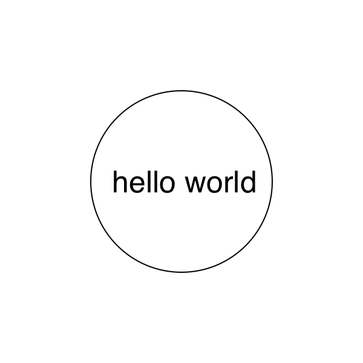
expands the 140 or so characters into this 250+ character source:
Drawing(600, 600, "luxor-drawing-072453_822.png")origin()background("white")sethue("black")fontsize(50)circle(Point(0, 0), 150, action=:stroke)text("hello world", halign=:center, valign=:middle)finish()preview()The @drawsvg macro returns SVG code of the drawing which, in this Documenter-generated document, will be inserted into the HTML source of the page.
using Luxor@drawsvg begin background("black") sethue("red") randpoint = Point(rand(-300:300), rand(-300:300)) circle(randpoint, 5, action = :fill) sethue("white") foreach(f -> arrow(f, between(f, randpoint, .1), arrowheadlength=6), first.(collect(Table(fill(30, 20), fill(30, 20)))))end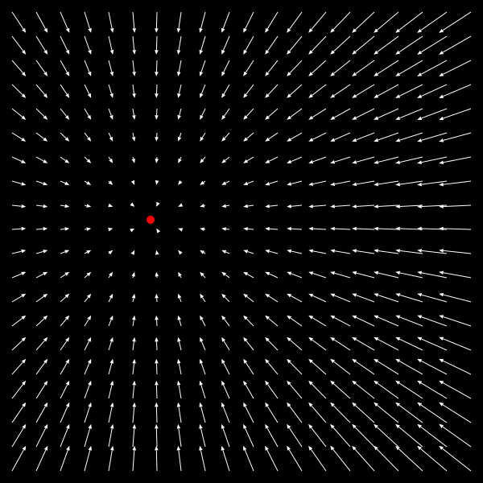
The @draw and drawsvg macros create a PNG or SVG format drawing in memory, rather than saved in a file, and the result of executing the code is returned and, in many editing environments, included and displayed as a graphic. For VS Code, the graphic is usually displayed in the plot pane. In Pluto, it appears above the cell.
using Luxor@draw begin setopacity(0.85) steps = 20 gap = 2 for (n, θ) in enumerate(range(0, step=2π/steps, length=steps)) sethue([Luxor.julia_green, Luxor.julia_red, Luxor.julia_purple, Luxor.julia_blue][mod1(n, 4)]) sector(Point(0, 0), 50, 250 + 2n, θ, θ + 2π/steps - deg2rad(gap), action = :fill) endend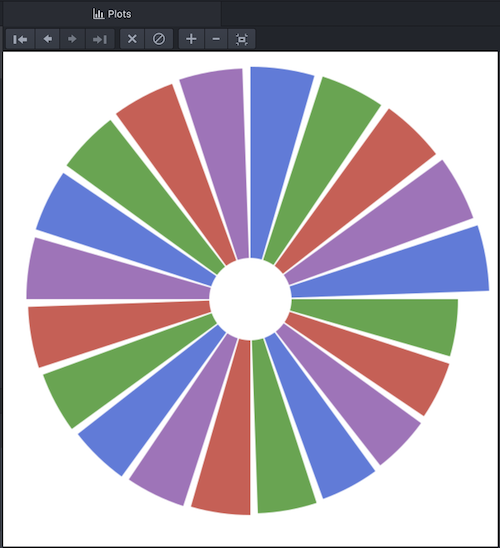
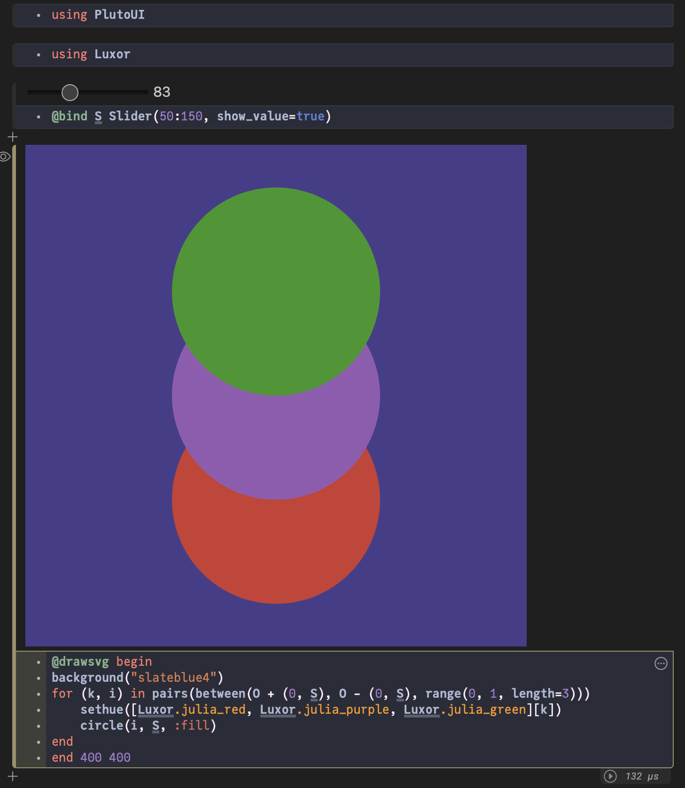
The Julia logos
Luxor contains built-in functions that draw the Julia logo, either in color or a single color, and the three Julia circles.
using LuxorDrawing(600, 400, "../assets/figures/julia-logos.png")origin()background("white")for θ in range(0, step=π/8, length=16) gsave() scale(0.2) rotate(θ) translate(350, 0) julialogo(action=:fill, bodycolor=randomhue()) grestore()endgsave()scale(0.3)juliacircles()grestore()translate(150, -150)scale(0.3)julialogo()finish()# preview()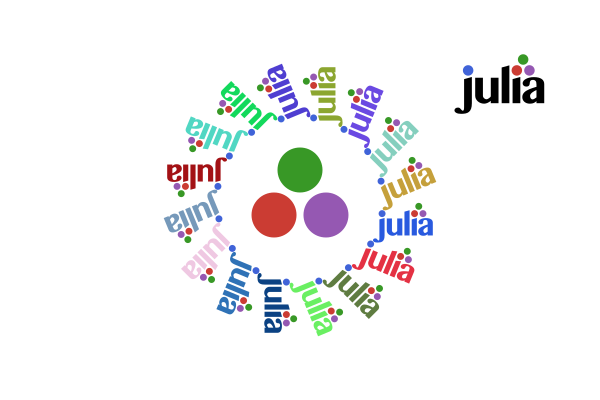
The gsave function saves the current drawing environment temporarily, and any subsequent changes such as the scale and rotate operations are discarded when you call the next grestore function.
Use the extension to specify the format: for example, change julia-logos.png to julia-logos.svg or julia-logos.pdf or julia-logos.eps to produce SVG, PDF, or EPS format output.
Something a bit more complicated: a Sierpinski triangle
Here's a version of the Sierpinski recursive triangle, clipped to a circle.
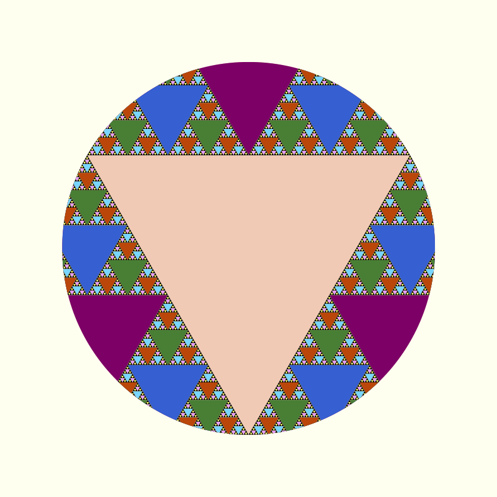
using Luxor, ColorsDrawing()background("white")origin()function triangle(points, degree) sethue(cols[degree]) poly(points, action = :fill)endfunction sierpinski(points, degree) triangle(points, degree) if degree > 1 p1, p2, p3 = points sierpinski([p1, midpoint(p1, p2), midpoint(p1, p3)], degree-1) sierpinski([p2, midpoint(p1, p2), midpoint(p2, p3)], degree-1) sierpinski([p3, midpoint(p3, p2), midpoint(p1, p3)], degree-1) endendfunction draw(n) circle(Point(0, 0), 75, :clip) points = ngon(Point(0, 0), 150, 3, -π/2, vertices=true) sierpinski(points, n)enddepth = 8 # 12 is ok, 20 is right out (on my computer, at least)cols = distinguishable_colors(depth) # from Colors.jldraw(depth)finish()preview()The Point type is an immutable composite type containing x and y fields that specify a 2D point.
Formatted text
Use textformat() to display text with formatting:
using Luxor, Colorsfunction textbackground(pos, str; fillcolor="grey20", strokecolor="grey80", ) @layer begin tx = textextents(str) bxwidth = tx[5] + 5 bxheight = tx[4] - tx[2] hpos = pos.x + tx[5] / 2 vpos = pos.y - tx[6] / 2 + tx[2] / 2 bxcenter = Point(hpos, vpos) sethue(fillcolor) box(bxcenter, bxwidth, bxheight, :fillpreserve) sethue(strokecolor) strokepath() endend@drawsvg beginbackground("black")sethue("white")fontsize(30)textformat( (text="We", fontsize=40), "want a language that’s", (text="open source", prolog = textbackground, color = HSV(10, 0.9, 0.9)), (text="with a liberal license.", # fontface="Georgia-Bold" ), (text="We want the speed of", color = "orange", # fontface = "Georgia-Italic" ), (text="C", color="cyan", fontsize=30), (text="with the",), (text="d y n a m i s m", baseline=10), "of", (text="Ruby", advance=0, prolog=(a, b) -> textbackground(a, b, strokecolor="orange", fillcolor="#A91401"), # fontface="Courier", fontsize=40), ".", (text="We want a language that's", color="grey80", fontsize = 30), #fontface="Georgia-Bold", (text="homoiconic", # fontface="Courier-Bold", color="orange", fontsize=35, baseline=-15), (text="with true macros like", color="green"), (text="Lisp,", # fontface="CourierNewPS-BoldItalicMT", fontsize=40), (text="but with obvious, familiar mathematical notation like", color="magenta", advance=30), (text="Matlab.", color="grey70", prolog=textbackground), position=boxtopleft() * 0.75, width=650, leading=200)end 800 400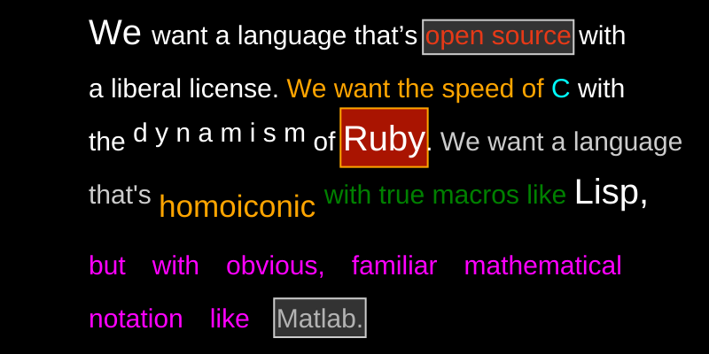
(but hopefully not quite as garish as this.)
Simple numberlines
tickline() is useful for generating spaced points along a line:
using Luxor@drawsvg beginbackground("black")fontsize(12)sethue("white")tickline(Point(-350, 0), Point(350, 0), finishnumber=100, log=true, major=7)end 800 150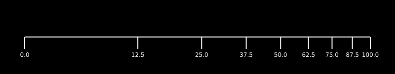
The arrow functions let you add decoration to the arrow shafts, so it's possible to use this function to create more complicated spacings. Here's how a curved number line could be made:
using Luxor@drawsvg begin background("antiquewhite") _counter() = (a = -1; () -> a += 1) counter = _counter() # closure fontsize(15) arrow(O + (0, 100), 200, π, 2π, arrowheadlength=0, decoration=range(0, 1, length=61), decorate = () -> begin d = counter() if d % 5 == 0 text(string(d), O + (0, -20), halign=:center) setline(3) end line(O - (0, 5), O + (0, 5), action = :stroke) end )end 800 300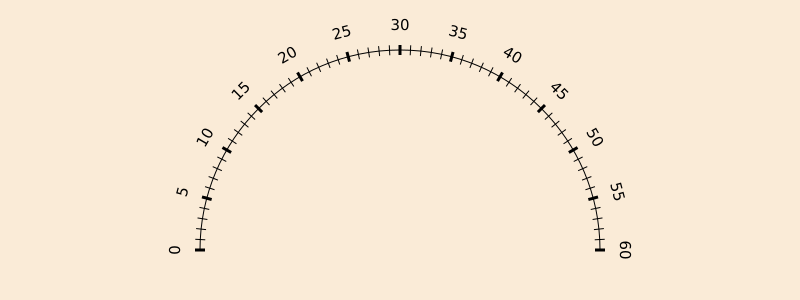
The decorate function here adds graphics and text at the origin, which is located at each point along the shaft.
Draw a matrix
To draw the contents of a matrix, you can use a Table to generate the positions for the numbers.
It's sometimes useful to be able to highlight particular cells. Here, numbers that have already been used once are drawn in orange.
using Luxorfunction drawmatrix(A::Matrix; cellsize = (10, 10)) table = Table(size(A)..., cellsize...) used = Set() for i in CartesianIndices(A) r, c = Tuple(i) if A[r, c] ∈ used sethue("orange") else sethue("purple") push!(used, A[r, c]) end text(string(A[r, c]), table[r, c], halign=:center, valign=:middle) sethue("white") box(table, r, c, action = :stroke) endendA = rand(1:99, 5, 8)@drawsvg begin background("black") fontsize(30) setline(0.5) sethue("white") drawmatrix(A, cellsize = 10 .* size(A))end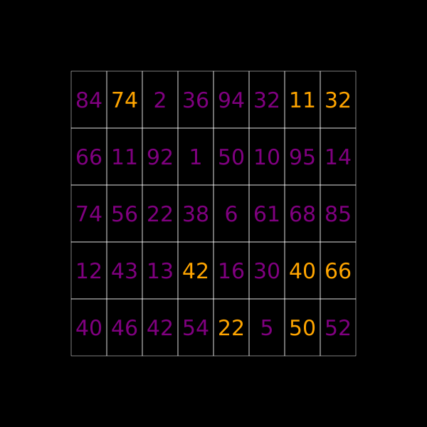
Simple $\LaTeX$ equations
You can draw simple $\LaTeX$ equations by passing a string to text(), using the formats provided by the LaTeXStrings.jl package.
# drawing with 800×300 canvasusing Luxorusing MathTeXEngined = Drawing(800, 300, :svg)origin()background("khaki")f(t) = Point(4cos(t) + 2cos(5t), 4sin(t) + 2sin(5t))setline(15)fontsize(35)@layer begin setopacity(0.4) sethue("purple") poly(20f.(range(0, 2π, length=160)), action = :stroke)endsethue("grey5")text(L"f(t) = [4\cos(t) + 2\cos(5t), 4\sin(t) + 2\sin(5t)]", O, halign=:center)fontsize(5) # hidefinish()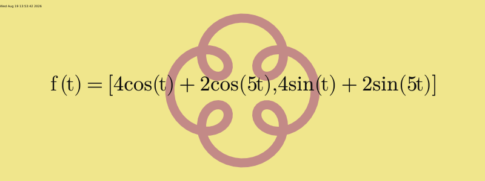
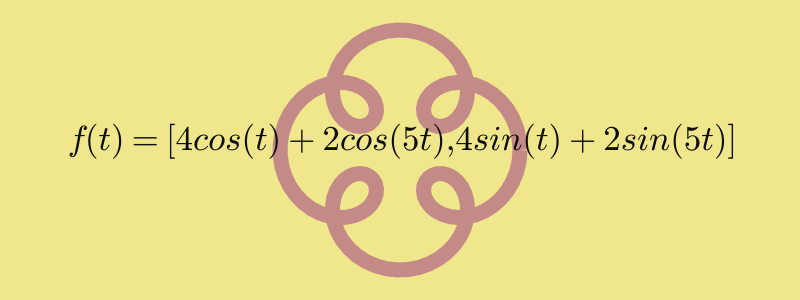
See the Writing LaTeX and Typst section for more information. You'll have to install the fonts that MathTeXEngine.jl requires.
Basic typesetting with Typst
You can typeset text, including equations, onto Luxor drawings using the Typstry package, which uses the Typst typesetting engine. Pass the text to be typeset as a TypstString to the text() function. General formatting and configuration information can be passed via the preamble keyword.
using Luxorusing Typstryts = typst"""$ f(t) = [4 cos(t) + 2 cos(5t), 4 sin(t) + 2 sin(5t)] $""";ty_preamble = typst""" #set page(fill: none, height: 300pt, width: 800pt, margin: 140pt); #set text(fill: black, size: 35pt)"""d = Drawing(800, 300, "/tmp/typst.svg")origin()background("khaki")f(t) = Point(4cos(t) + 2cos(5t), 4sin(t) + 2sin(5t))setline(15)@layer begin setopacity(0.4) sethue("purple") poly(20f.(range(0, 2π, length=160)), action=:stroke)endtext(ts, O, preamble=ty_preamble, centered=true)finish()preview()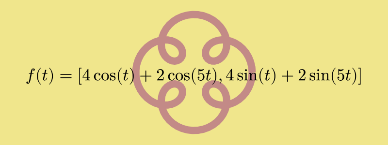
You can render multipage Typst documents with the render_typst_document() function.
Drawing pixels
You can use Luxor to draw into an array of ARGB32 values, which are essentially colored pixels. This example uses Images.jl to display the array.
using Luxor, Colors, Images# a matrix of 150 rows, 600 columnsbuffer = zeros(ARGB32, 150, 600) Drawing(buffer)origin()for i in 1:15:150 buffer[i:i+10, 1:600] .= RGB(rand(), rand(), rand())endfor i in 1:100 randomhue() ngon(rand(BoundingBox()), 15, 4, 0, :fill)endfinish()buffer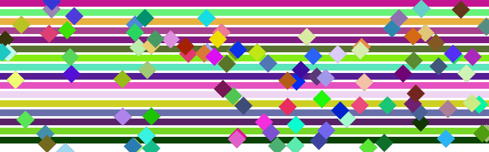
Triangulations
This example shows how a Delaunay triangulation of a set of random points can be used to derive a set of Voronoi cells.
# Inspired by @TheCedarPrince!using Luxor, Colors, RandomRandom.seed!(42)d = @drawsvg beginbackground("black")setlinejoin("bevel")verts = randompointarray(BoundingBox(), 40)triangles = polytriangulate(verts) # create Delaunay@layer begin for tri in triangles sethue(HSB(rand(120:320), 0.7, 0.7)) poly(tri, action = :stroke, close=true) endenddict = Dict{Point, Vector{Int}}()for (n, t) in enumerate(triangles) for pt in t if haskey(dict, pt) push!(dict[pt], n) else dict[pt] = [n] end endendsetopacity(0.9)setline(3)for v in verts hull = Point[] tris = dict[v] # vertex v belongs to all triangles tris for tri in tris push!(hull, trianglecenter(triangles[tri]...)) end sethue(HSB(rand(120:320), 0.7, 0.7)) if length(hull) >= 3 ph = polyhull(hull) poly(ph, action = :fillpreserve, close=true) sethue("black") strokepath() endendend 800 500d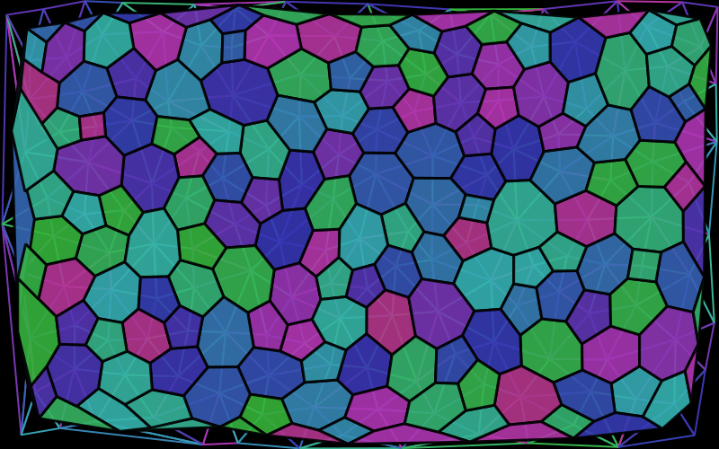